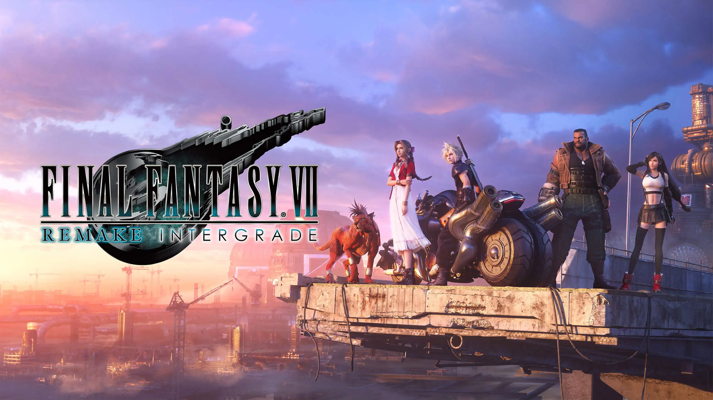

Unreal Engine es uno de los motores de videojuegos más poderosos y populares en la industria del desarrollo de videojuegos. Fue creado por Epic Games y se ha convertido en una herramienta esencial para desarrolladores tanto profesionales como independientes. Ofrece un conjunto completo de herramientas para diseñar, desarrollar y optimizar videojuegos y aplicaciones gráficas.
Gráficos en Tiempo Real:
Unreal Engine es conocido por su capacidad para renderizar gráficos fotorrealistas en tiempo real. Su sistema de iluminación global, sombras dinámicas y efectos de postprocesado permiten crear ambientes visualmente impresionantes.
Blueprints:
Este es un sistema de scripting visual que permite a los desarrolladores crear lógica de juego sin necesidad de escribir código. Es ideal para prototipos rápidos y para desarrolladores sin experiencia en programación.
Motor de Física:
Unreal Engine incluye un robusto motor de física que maneja colisiones, fuerzas, y simulaciones físicas complejas, esenciales para juegos de acción y simulaciones realistas.
Inteligencia Artificial (IA):
Proporciona herramientas para crear IA sofisticada, como sistemas de comportamiento, percepción, y navegación para personajes no jugadores (NPCs).
Soporte para Realidad Virtual y Aumentada:
Unreal Engine tiene un fuerte soporte para VR (Realidad Virtual) y AR (Realidad Aumentada), lo que lo convierte en una herramienta líder para la creación de experiencias inmersivas.
Multijugador y Redes:
Ofrece una infraestructura para juegos multijugador, incluyendo servidores dedicados, replicación de objetos, y sincronización de estados.
Editor de Materiales:
Una herramienta visual para crear y editar materiales y shaders complejos sin necesidad de escribir código shader.
Optimización y Profiling:
Herramientas para optimizar el rendimiento del juego, incluyendo análisis de rendimiento, gestión de memoria, y optimización de renderizado.
Unreal Engine fue creado por Tim Sweeney, fundador de Epic Games, y la primera versión del motor fue lanzada en 1998 junto con el juego Unreal. Desde entonces, ha evolucionado significativamente, convirtiéndose en una de las plataformas más influyentes en el desarrollo de videojuegos.
Unreal Engine ha experimentado un crecimiento significativo desde su lanzamiento:
Unreal Engine 1 (1998): La primera versión se lanzó con el juego Unreal. Este motor introdujo gráficos 3D avanzados para su tiempo y un sistema de edición en tiempo real.
Unreal Engine 2 (2002): Mejoras en la física, renderizado y soporte para consolas como la PlayStation 2 y la Xbox.
Unreal Engine 3 (2006): Se destacó por su avanzado renderizado gráfico, utilizado en juegos como Gears of War. Fue el estándar de oro durante muchos años en la industria
Unreal Engine 4 (2014): Introdujo un modelo de negocio más accesible, con un fuerte enfoque en gráficos de última generación, herramientas de desarrollo accesibles y soporte para VR y AR.
Unreal Engine 5 (2021): Lanzado con características innovadoras como Nanite para geometría de micropolígonos virtualizados y Lumen para iluminación global en tiempo real. Es compatible con la próxima generación de consolas y ofrece herramientas aún más avanzadas para crear mundos abiertos y gráficos fotorrealistas.
Unreal Engine ha sido utilizado para crear una gran variedad de juegos populares, tales como:
Fortnite:es un videojuego multiplataforma gratuito perteneciente al género battle royale desarrollado y publicado por Epic Games.cuenta con hasta 100 jugadores, en solitario, dúos, tríos o escuadrones de hasta cuatro jugadores, intentando ser el último jugador con vida eliminando a otros jugadores o evadiéndolos, al tiempo que se mantiene dentro de una zona segura que se encoge constantemente para evitar recibir daños letales provenientes de una tormenta tóxica. Los jugadores deben buscar armas para ganar ventaja sobre sus oponentes.
Final Fantasy VII: Remake Es un videojuego de rol de acción, publicado por la empresa Square Enix inicialmente para la plataforma PlayStation 4. Es una franquicia de medios distribuida y propiedad de Square Enix (antes conocida como Squaresoft). La franquicia se centra en una serie de fantasía y ciencia ficción de videojuegos RPG.

Gears Of War Es un videojuego de disparos en tercera persona, del género acción-aventura y estrategia y terror, desarrollado por Epic Games utilizando el motor de videojuego Unreal Engine 3. El juego se basa en frenéticos tiroteos donde es vital usar la cobertura que ofrecen los escenarios para mantener al personaje a salvo. La campaña principal está dividida en 5 actos, que pueden ser jugados tanto individualmente como en modo cooperativo, ya sea en la misma consola, mediante red local o la red en línea.
Ark 2 es la secuela de ARK: Survival Evolved. Se tratará de un juego tipo supervivencia, similar al primero. En el juego, los jugadores deben sobrevivir en un mundo lleno de dinosaurios y otros animales prehistóricos además de entes tecnológicos altamente desarrollados los cuales serán tratados en profundidad durante las numerosas batallas con los jefes encontrados a lo largo del juego, que deambulan por el mapa, peligros naturales y otros jugadores potencialmente hostiles.
Gráficos de Alta Calidad:Unreal Engine es conocido por ofrecer gráficos de alta calidad que pueden igualar o superar a otros motores.
Amplia Documentación y Comunidad:Tiene una gran cantidad de recursos, tutoriales y una comunidad activa que facilita la resolución de problemas y el aprendizaje.
Potente Motor de Física y Animación:Ideal para juegos que requieren físicas complejas y animaciones fluidas.
Flexible y Escalable: Se puede usar para crear desde pequeños juegos móviles hasta grandes juegos AAA, películas y simulaciones.
Soporte Multiplataforma:Facilita el desarrollo y despliegue de juegos en múltiples plataformas como PC, consolas, móviles y dispositivos VR.
Scripting Visual (Blueprints):Permite a los desarrolladores sin conocimientos de programación crear lógicas de juego complejas.
Modelo de Licenciamiento Accesible:Epic Games cobra regalías sólo si el juego genera ingresos, lo que lo hace accesible para desarrolladores independientes.
Para saber mas sobre Unreal Engine y si te interesa, puedes chequear mas en su pagina oficial. Ahi aprenderas como utilizarlo y como podras darle vida a tus ideas. Solamente dame CLICK y comenzaremos con las maravillas.